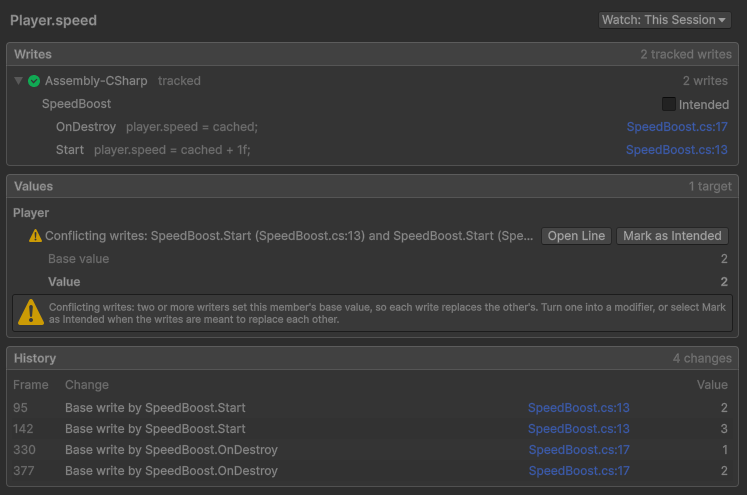
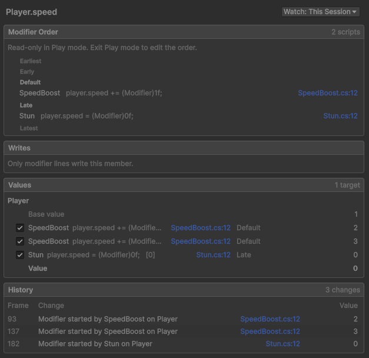

Tutorial: Coordinate a player's speed
Example overview
You build a player that runs over pads: two speed boost pads, whose boosts stack, and a stun pad that stops the
player. You start with a boost that uses plain writes, see two boosts break each other in the Concordance window,
and fix the boost with a modifier. You then order the stun after the boosts with a phase, log each change of speed
with Observe, and read how the speed is computed in the Concordance window.
When you finish, the player speeds up on each boost pad, stops on the stun pad, and returns to its own speed once every effect ends, with no script caching or restoring the speed.
Prerequisites
Before you start, install Concordance, and get familiar with the following:
Create the player
To create the player and its speed boost pads, perform the following steps:
- Create a C# script named
Player.cswith the following contents:using UnityEngine; public class Player : MonoBehaviour { public float speed = 1f; void Update() => transform.Translate(speed * Time.deltaTime, 0f, 0f); } - Create a C# script named
SpeedBoost.cswith the following contents:using UnityEngine; public class SpeedBoost : MonoBehaviour { [SerializeField] float duration = 5f; Player player; float cached; void Start() { player = GetComponent<Player>(); cached = player.speed; player.speed = cached + 1f; Destroy(this, duration); } void OnDestroy() => player.speed = cached; } - Create a C# script named
BoostPad.cswith the following contents:using UnityEngine; public class BoostPad : MonoBehaviour { void OnTriggerEnter(Collider other) => other.gameObject.AddComponent<SpeedBoost>(); } - Go to GameObject > 3D Object > Cube, and name the
cube
Player. Set its position to (0, 0, 0). - Add the Player component and a Rigidbody component to the player, and enable the Rigidbody's Is Kinematic property.
- Create another cube, name it
Boost Pad, and set its position to (3, 0, 0). - In the boost pad's Box Collider component, enable Is Trigger, then add the Boost Pad component.
- Duplicate the boost pad, and set the copy's position to (5, 0, 0).
Find the conflict
To see two boosts break each other, perform the following steps:
- Go to Tools > Concordance > Open Window.
- In the search field, enter
speed, and select Player.speed. Its Writes section lists the two lines ofSpeedBoostthat write the speed. - Select Watch, then Watch for This Session. No script modifies the speed yet, so the window follows it only once you watch it.
- Enter Play mode, and let the player run over both boost pads.
The speed goes from 1 to 2, then 3. When the first boost ends, it writes back 1, although the second boost is still active. When the second boost ends, it writes back 2, and the player keeps that speed for good. The Concordance window flags Conflicting writes on Player.speed, with the line of each boost.

Exit Play mode before you continue.
Fix the boost with a modifier
To turn the boost into a modifier, perform the following steps:
- In
SpeedBoost.cs, addusing Concordance;aboveusing UnityEngine;. - In
Start, replace the two lines that cache the speed and write the boosted speed:cached = player.speed; player.speed = cached + 1f;with a modifier line:
player.speed += (Modifier)1f;(Modifier)turns the write into a modifier: a change layered on top of the speed. - Delete the
cachedfield and theOnDestroymethod. The modifier ends when the component that wrote it is destroyed, so the boost has nothing to restore.SpeedBoost.csnow has the following contents:using Concordance; using UnityEngine; public class SpeedBoost : MonoBehaviour { [SerializeField] float duration = 5f; Player player; void Start() { player = GetComponent<Player>(); player.speed += (Modifier)1f; Destroy(this, duration); } } - Enter Play mode, and let the player run over both boost pads.
The speed now goes to 2, then 3, then back to 2 when the first boost ends, and to 1 when the second one ends. To end
a modifier before its component is destroyed, assign Modifier.Stop to the member.
Exit Play mode before you continue.
Order the stun after the boosts
A stun sets the speed to 0, and must apply after the boosts: a boost applied after the stun would add 1 to its 0, and the player would move while stunned. To add the stun, perform the following steps:
- Create a C# script named
Stun.cswith the following contents:using Concordance; using UnityEngine; public class Stun : MonoBehaviour { [SerializeField] float duration = 2f; void Start() { Player player = GetComponent<Player>(); player.speed = (Modifier)0f; Destroy(this, duration); } } - Create a C# script named
StunPad.cswith the following contents:using UnityEngine; public class StunPad : MonoBehaviour { void OnTriggerEnter(Collider other) => other.gameObject.AddComponent<Stun>(); } - Duplicate a boost pad, name the copy
Stun Pad, and set its position to (8, 0, 0). Remove its Boost Pad component, and add the Stun Pad component. - In the Concordance window, select Player.speed.
Its Modifier Order lists SpeedBoost and Stun together in the
Default phase, and the window flags Order not set: both scripts modify the speed, and
no phase says which one applies first.
To place the stun after the boosts, perform the following steps:
- In
Stun.cs, add[ModifierPhase.Late]above the class:[ModifierPhase.Late] public class Stun : MonoBehaviour - Enter Play mode, and let the player run over the three pads.
The Modifier Order of Player.speed now shows Stun in the
Late phase, after every modifier in Default, and the flag is gone. The player speeds up
on both boost pads, stops on the stun pad for two seconds, then runs on at its boosted speed until the boosts
end.
Exit Play mode before you continue.
Observe the speed
A field raises no event when it changes. To log each change of speed, perform the following steps:
- Create a C# script named
SpeedLog.cswith the following contents:using Concordance; using UnityEngine; public class SpeedLog : MonoBehaviour { void Start() { Player player = GetComponent<Player>(); player.speed.Observe(OnSpeedChanged); } void OnSpeedChanged(float speed) => Debug.Log($"Speed: {speed}"); } - Add the Speed Log component to the player.
- Enter Play mode, and let the player run over the three pads.
The Console window now logs each new speed as each modifier starts and ends: 2, 3, 0, 3, 2, then 1. The handler runs for a plain write too.
Exit Play mode before you continue.
Read the speed in the Concordance window
To see how the speed is computed, perform the following steps:
- In the Concordance window, select Player.speed, then select Watch > Watch for This Session again. A watch for this session ends when you exit Play mode.
- Enter Play mode, and when the player stops on the stun pad, select Pause in the toolbar.
The Values section of Player.speed shows the base value 1, the modifier of each
boost, the stun's modifier in the Late phase, then the value 0. Each modifier names its owner and its
line: select the line to open it in your code editor.

Its History section lists the latest changes of the speed, each with the line that made it.